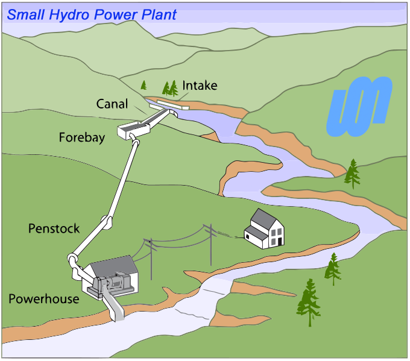

1 / 25

Caption Text
4 / 25

Caption Three
5 / 25

Caption Three
6 / 25

Caption Three
7 / 25

Caption Three
9 / 25

Caption Three
10 / 25

Caption Three
12 / 25

Caption Three
13 / 25

Caption Three
14 / 25

Caption Three
15 / 25

Caption Three